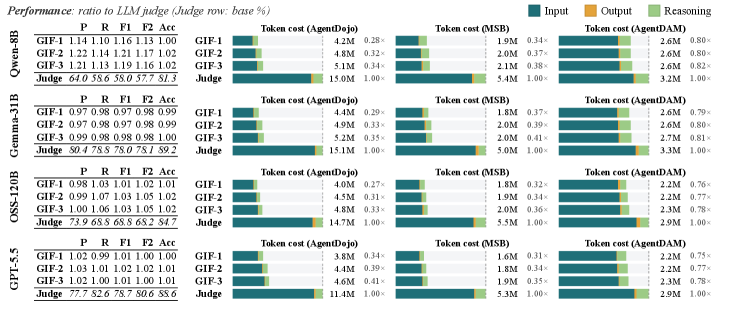
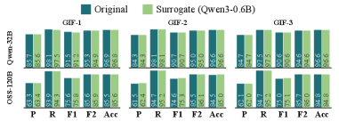
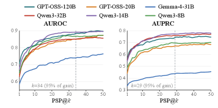

Provides a fully mechanized Lean 4 proof that the geometric information-flow measure upper-bounds true information flow under local regularity.
Abstract
Large language models increasingly mediate interactions between sensitive data, untrusted inputs, and privileged actions in agentic systems, creating security and privacy risks. These range from prompt injections that manipulate downstream tool use to leakage of confidential information through model outputs. Recent Information Flow Control (IFC)-based defenses show promise but lack a principled semantic foundation for reasoning about information flow through the model itself. Since any input token may influence any output token in an autoregressive LLM, existing approaches suffer from severe taint explosion. We present Geometric Information Flow (GIF), a semantic framework for tracking information flow from input tokens to outputs. GIF uses the LLM Jacobian and local output geometry to upper-bound the Shannon mutual information between perturbed input spans and model outputs, yielding a scalable measure computable on large models via automatic differentiation and low-rank approximation. Unlike attention-based or correlational attribution heuristics, GIF satisfies local geometric soundness, and we provide a fully mechanized Lean 4 proof that it upper-bounds the true information flow induced by a given prompt under local regularity assumptions. We evaluate GIF on integrity and confidentiality tasks across multiple prompt-injection and privacy-leakage benchmarks. GIF achieves near-perfect recall even without a downstream declassifier, outperforming attention-based baselines. Combined with lightweight LLM-based declassifiers, it matches or exceeds the F1 of direct LLM-as-judge baselines such as GPT-5.5 xhigh reasoning while using up to 81x lower token cost. GIF flows detected with small surrogate models transfer to larger state-of-the-art models and other model families, even when the surrogate is up to 200x smaller, suggesting black-box deployment without gradient access.
Problem
LLMs in agentic systems create security and privacy risks via prompt injection and information leakage. Existing Information Flow Control defenses lack a principled semantic foundation and suffer severe taint explosion in autoregressive models.
Approach
Geometric Information Flow (GIF) uses the LLM Jacobian and local output geometry to upper-bound the Shannon mutual information between perturbed input spans and outputs, made scalable via automatic differentiation and low-rank approximation. A fully mechanized Lean 4 proof shows GIF upper-bounds the true information flow under local regularity assumptions.

Figure 2: GIF-guided declassification vs. full-trajectory judging. Each row block is one model acting as both the monitored agent and its own declassifier. Left: detection quality of GIF- k , as a ratio to the same model’s full-trajectory judge (judge row: absolute %); \geq 1 means the reduced transcript matches or beats the full one. Right: declassifier token cost per benchmark, split into input,
Results
GIF achieves near-perfect recall, and with lightweight declassifiers matches or exceeds direct LLM-as-judge baselines such as GPT-5.5 at up to 81x lower token cost. Flows from surrogate models up to 200x smaller transfer to larger models and other families.

Figure 3: Surrogate analysis models. Detection precision (P), recall (R), F_{1} , F_{2} , and accuracy (Acc) for the three GIF score variants when AgentDojo trajectories from Qwen 3 32B (top) and GPT OSS 120B (bottom) are attributed using the original target model ( Original ) versus a fixed Qwen 3 0.6B surrogate. The surrogate tracks the original across both targets and all variants, including th

Figure 4: Attribution cutoff k . AUROC (left) and AUPRC (right) of GIF attribution as a function of the cutoff k in \textsc{PSP@}k , for six models averaged over AgentDojo, MSB, and AgentDAM. Both metrics saturate: 95\% of the AUROC gain is reached by k{=}34 and of the AUPRC gain by k{=}29 .